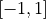
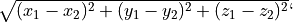

Lezione 8b - Python: Codice condizionale: if
if/elif/else (se/altrimenti-se/altrimenti) permettono di
scrivere codice che viene eseguito solo se una condizione e’ soddisfatta:
if condizione:
print("la condizione e' vera")
oppure di gestire separatamente i due casi soddisfatta/non soddisfatta:
if condizione:
print("la condizione e' vera")
else:
print("la condizione e' falsa")
oppure n casi diversi:
if condizione_1:
print("la prima condizione e' vera")
elif condizione_2:
print("la seconda condizione e' vera")
elif condizione_3:
print("la terza condizione e' vera")
else:
print("nessuna condizione e' vera")
L’if, gli elif e l’else formano una “catena”: sono mutualmente
esclusivi, solo uno tra loro viene eseguito!
Esempio. Il codice in un elif ed else e’ mutualmente
esclusivo con quello dei vari if ed elif che lo precedono.
Ad esempio, supponiamo di avere due variabili Boolean c1 e c2.
Guardiamo in dettaglio in che caso vengono eseguite le varie righe di codice
nell’ultimo esempio:
# c1 c2 | c1 c2 | c1 c2 | c1 c2
# True True | True False | False True | False False
# ----------|------------|------------|------------
print("inizio") # si | si | si | si
if c1: # si | si | si | si
print("1") # si | si | no | no
elif c2: # no | no | si | si
print("2") # no | no | si | no
else: # no | no | no | si
print("0") # no | no | no | si
print("fine") # si | si | si | si
E’ chiaro che se c1 e’ vera, il valore di c2 (ed il corrispondente
elif c2) non influenza il comportamento del programma: se l’if viene
eseguito (cioe’ se c1 e’ vera) gli elif ed else successivi non
vengono neanche considerati!
Supponiamo di voler stampare "1" se c1 e’ vera, ed anche "2" se
c2 e’ vera – in modo del tutto indipendente. Posso fare cosi’:
print("inizio")
if c1:
print("1")
if c2:
print("2")
if not c1 and not c2:
print("0")
print("fine")
Qui gli if non formano una “catena”: sono indipendenti l’uno dall’altro!
Esempio. Python usa l’indentazione per decidere quale codice fa parte
dell’if e quale no.
Scrivo un programma Python per testare se l’utente e’ un telepate:
print("sto pensando ad un numero tra 1 e 10...")
telepate = int(input("qual'e'? ")) == 6
print("sto calcolando...")
if telepate:
print("DING DING DING DING!")
print("COMPLIMENTI!")
print("sei un telepate certificato!")
else:
print("grazie per aver giocato")
print("riprova di nuovo")
print("fine.")
Come si vede eseguendo l’esempio con l’interprete, Python considera dentro
l’if tutti i print() indentati.
Esempio. Questo codice apre un file e controlla (i) se e’ vuoto, e (ii)
se contiene intestazioni (righe che cominciano per ">"), reagendo di
conseguenza:
print("comincio...")
righe = open("data/prot-fasta/1A3A.fasta").readlines()
if len(righe) == 0:
print("il file FASTA e' vuoto")
else:
primi_caratteri_di_ogni_riga = [riga[0] for riga in righe]
if not (">" in primi_caratteri_di_ogni_riga):
print("il file FASTA non e' valido")
else:
print("il file FASTA e' valido")
print("fatto!")
Quiz:
E’ possibile che il codice stampi sia che il file e’ vuoto, sia che e’ valido?
E’ possibile che il codice non stampi
"comincio..."o"fatto!"?Se il file e’ effettivamente vuoto, quando Python esegue la riga
print("fatto!"), che valore ha la variabileprimi_caratteri_di_ogni_riga?Posso semplificare il codice usando
elif?
Esercizi
Warning
Non dimenticate i due punti!
Se provo a scrivere un if e dimentico i due punti, es.:
>>> condizione = input("Dimmi si: ") == "si"
>>> if condizione
appena premo invio, Python mi dice che la sintassi e’ errata:
File "<stdin>", line 1
if condizione
^
SyntaxError: invalid syntax
e si rifiuta di eseguire il codice. Quindi e’ facile riconoscere l’errore.
Warning
State attenti all’indentazione!
Sbagliare l’indentazione modifica il comportamento del programma senza pero’ renderlo necessariamente invalido.
In alcuni casi e’ facile capire cosa sta succedendo, es.:
>>> condizione = input("Dimmi si: ") == "si"
>>> if condizione:
>>> print("hai detto:")
>>> print("si")
Python da’ errore immediatamente:
File "<stdin>", line 4
print("si")
^
IndentationError: unexpected indent
In altri invece l’errore e’ molto piu’ sottile. Vedi sezione su codice annidato.
Chiedere all’utente un numero con
input(). Se il numero e’ pari, stampare"pari"a schermo, se e’ dispari, stampare"dispari".Hint.
input()restituisce sempre una stringa.Chiedere all’utente un numero razionale. Se il numero e’ nell’intervallo , stampare
"okay", altrimenti non stampare niente.Hint. E’ necessario usare
elif/else?Chiedere all’utente due numeri interi. Se il primo e’ maggiore del secondo, stampare
"primo", se il secondo e’ maggiore del primo stampare"secondo", altrimenti stampare"nessuno dei due".Dato il dizionario:
oroscopo_di = { "gennaio": "fortuna estrema", "febbraio": "fortuna galattica", "marzo": "fortuna incredibile", "aprile": "ultra-fortuna", }
chiedere all’utente il suo mese di nascita. Se il mese appare come chiave nel dizionario
oroscopo_di, stampare a schermo il valore corrispondente. Altrimenti stampare"non disponibile".Hint. Per controllare se una chiave appare in un dizionario si puo’ usare
key in dict.Chiedere all’utente il percorso ad un file e leggere i contenuti del file con il metodo
readlines(). Poi stampare:Se il file e’ vuoto, la stringa
"vuoto"Se il file ha meno di 100 righe,
"piccolo"e il numero di righe.Se il file ha tra le 100 e le 1000 righe,
"medio"e il numero di righe.Altrimenti,
"grande"e il numero di righe.
La risposta deve essere stampata su una sola riga.
Chiedere all’utente due triplette di razionali (usando due chiamate a
input()). Le due triplette rappresentano due punti nello spazio tridimensionale (tre coordinate a testa).
a testa).Se tutte le coordinate sono non-negative, stampare a schermo la distanza Euclidea dei due punti.
Hint: la distanza Euclidea e’ 
E’ possibile che questo codice:
numero = int(input("scrivi un numero: ")) if numero % 3 == 0: print("divide 3!") elif numero % 3 != 0: print("non divide 3!") else: print("boh")
stampi
"boh"?E’ possibile che questo codice:
numero = int(input("scrivi un numero: ")) if numero % 2 == 0: print("divide 2!") if numero % 3 == 0: print("divide 3!") if numero % 2 != 0 and numero % 3 != 0: print("boh")
stampi
"boh"?Chiedere all’utente se vuole eseguire una somma o un prodotto.
Se l’utente vuole eseguire una somma, chiedere due numeri, effettuare la somma, e stampare il risultato.
Idem se l’utente vuole eseguire un prodotto.
Se l’utente non risponde ne’
"somma"ne’"prodotto", non fare niente.